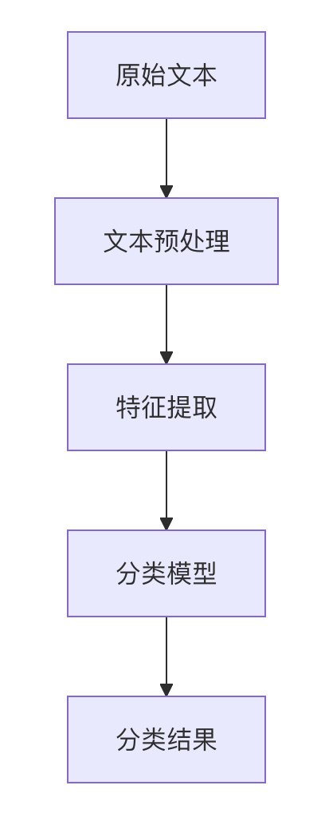

テキスト分類
テキスト分類（Text Classification）は、自然言語処理（NLP）の中でも最も基本的かつ重要なタスクの一つです。その目的は、与えられたテキスト文書を、あらかじめ定義された1つまたは複数のカテゴリに自動的に分類することです。
基本概念
テキスト分類は、図書館の司書のようなものです。本の内容に基づいて、適切な棚に分類して並べる必要があります。コンピュータの分野では、機械にテキストの内容を理解させ、正しい分類判断を下す方法を教える必要があります。
応用シーン
テキスト分類は現代社会で幅広く応用されています。
- 感情分析：コメントがポジティブかネガティブかを判断する
- スパムメールフィルタリング：通常のメールとスパムメールを区別する
- ニュース分類：ニュースをスポーツ、経済、テクノロジーなどのカテゴリに分類する
- 意図認識：ユーザーのクエリの真の意図を理解する
- 医療診断：症状の説明に基づいて疾患のタイプを分類する
テキスト分類の基本フロー
完全なテキスト分類システムには、通常、以下のステップが含まれます。

1. テキスト前処理
テキスト前処理は、生のテキストを機械学習モデルが処理しやすい形式に変換することです。
例
import re
import nltk
from nltk.corpus import stopwords
from nltk.stem import PorterStemmer
def preprocess_text(text):
# 小文字に変換
text = text.lower()
# 特殊文字と数字を削除
text = re.sub(r'[^a-zA-Z\s]', '', text)
# トークン化（分かち書き）
words = text.split()
# ストップワードを削除
stop_words = set(stopwords.words('english'))
words = [word for word in words if word not in stop_words]
# ステミング（語幹抽出）
stemmer = PorterStemmer()
words = [stemmer.stem(word) for word in words]
return ' '.join(words)
import nltk
from nltk.corpus import stopwords
from nltk.stem import PorterStemmer
def preprocess_text(text):
# 小文字に変換
text = text.lower()
# 特殊文字と数字を削除
text = re.sub(r'[^a-zA-Z\s]', '', text)
# トークン化（分かち書き）
words = text.split()
# ストップワードを削除
stop_words = set(stopwords.words('english'))
words = [word for word in words if word not in stop_words]
# ステミング（語幹抽出）
stemmer = PorterStemmer()
words = [stemmer.stem(word) for word in words]
return ' '.join(words)
2. 特徴抽出
テキストを数値特徴表現に変換します。一般的な方法は以下のとおりです。
| 手法 | 説明 | 利点 | 欠点 |
|---|---|---|---|
| Bag of Words（BoW）モデル | 単語の頻度を統計する | シンプルで直感的 | 語順や意味を無視する |
| TF-IDF | 単語の重要性を考慮する | BoWより正確 | それでも文脈を無視する |
| Word2Vec | 単語ベクトル表現 | 意味的な関係を捉える | 多義語を処理できない |
| BERT | 文脈埋め込み | 最先端の表現 | 計算リソースの要求が高い |
3. 分類モデルの選択
タスクの要件とデータの特性に応じて適切な分類アルゴリズムを選択します。
従来の機械学習手法：
- ナイーブベイズ
- サポートベクターマシン（SVM）
- ロジスティック回帰
- ランダムフォレスト
深層学習手法：
- 畳み込みニューラルネットワーク（CNN）
- リカレントニューラルネットワーク（RNN/LSTM）
- Transformerモデル（BERTなど）
実践例：ニュース分類
実際の例を使って、Pythonでテキスト分類を実装する方法をデモンストレーションしましょう。20 Newsgroupsデータセットを使用します。これは古典的なニュース分類データセットです。
1. データ準備
例
from sklearn.datasets import fetch_20newsgroups
# 例として4つのカテゴリを選択
categories = ['alt.atheism', 'soc.religion.christian', 'comp.graphics', 'sci.med']
# トレーニングセットとテストセットを読み込み
newsgroups_train = fetch_20newsgroups(subset='train', categories=categories)
newsgroups_test = fetch_20newsgroups(subset='test', categories=categories)
print(f"トレーニングセットのサンプル数: {len(newsgroups_train.data)}")
print(f"テストセットのサンプル数: {len(newsgroups_test.data)}")
# 例として4つのカテゴリを選択
categories = ['alt.atheism', 'soc.religion.christian', 'comp.graphics', 'sci.med']
# トレーニングセットとテストセットを読み込み
newsgroups_train = fetch_20newsgroups(subset='train', categories=categories)
newsgroups_test = fetch_20newsgroups(subset='test', categories=categories)
print(f"トレーニングセットのサンプル数: {len(newsgroups_train.data)}")
print(f"テストセットのサンプル数: {len(newsgroups_test.data)}")
2. 特徴抽出（TF-IDF）
例
from sklearn.feature_extraction.text import TfidfVectorizer
# TF-IDFベクトライザーを作成
vectorizer = TfidfVectorizer(max_features=5000)
# トレーニングセットとテストセットを変換
X_train = vectorizer.fit_transform(newsgroups_train.data)
X_test = vectorizer.transform(newsgroups_test.data)
y_train = newsgroups_train.target
y_test = newsgroups_test.target
# TF-IDFベクトライザーを作成
vectorizer = TfidfVectorizer(max_features=5000)
# トレーニングセットとテストセットを変換
X_train = vectorizer.fit_transform(newsgroups_train.data)
X_test = vectorizer.transform(newsgroups_test.data)
y_train = newsgroups_train.target
y_test = newsgroups_test.target
3. モデル学習（ロジスティック回帰）
例
from sklearn.linear_model import LogisticRegression
from sklearn.metrics import accuracy_score, classification_report
# モデルを作成して学習
model = LogisticRegression(max_iter=1000)
model.fit(X_train, y_train)
# テストセットを予測
y_pred = model.predict(X_test)
# モデルを評価
print(f"正解率: {accuracy_score(y_test, y_pred):.2f}")
print("\n分類レポート:)
print(classification_report(y_test, y_pred, target_names=newsgroups_test.target_names))
from sklearn.metrics import accuracy_score, classification_report
# モデルを作成して学習
model = LogisticRegression(max_iter=1000)
model.fit(X_train, y_train)
# テストセットを予測
y_pred = model.predict(X_test)
# モデルを評価
print(f"正解率: {accuracy_score(y_test, y_pred):.2f}")
print("\n分類レポート:)
print(classification_report(y_test, y_pred, target_names=newsgroups_test.target_names))
4. 結果分析
典型的な出力結果は以下のようになります。
准确率: 0.91
分类报告:
precision recall f1-score support
alt.atheism 0.90 0.87 0.89 319
soc.religion.christian 0.93 0.95 0.94 389
comp.graphics 0.89 0.90 0.90 396
sci.med 0.92 0.91 0.92 398
accuracy 0.91 1502
macro avg 0.91 0.91 0.91 1502
weighted avg 0.91 0.91 0.91 1502
応用テクニックと課題
クラス不均衡への対処
特定のカテゴリのサンプル数が他のカテゴリよりもはるかに多い場合は、次の方法を試せます。
- リサンプリング（少数クラスのオーバーサンプリングまたは多数クラスのアンダーサンプリング）
- クラス重みを使用する
- 異なる評価指標を試す（例：正解率ではなくF1スコア）
モデル性能を向上させる方法
特徴エンジニアリング：
- 異なるn-gram範囲を試す
- 品詞特徴を追加する
- より高度な単語埋め込みを使用する
モデル最適化：
- ハイパーパラメータ調整
- モデルアンサンブル
- 深層学習モデルを試す
データ拡張：
- 逆翻訳（バックトランスレーション）
- 同義語置換
- 敵対的生成ネットワーク（GAN）
よくある課題
- マルチラベル分類：1つの文書が複数のカテゴリに属する可能性がある
- ドメイン適応：新しいドメインでのモデルの性能が低下する
- 少数ショット学習：ラベル付きデータが限られている場合
- 解釈可能性：モデルが特定の分類判断を下した理由を理解する
まとめと学習ロードマップ
テキスト分類はNLPの基本タスクであり、これを習得することはより複雑なNLPアプリケーションを理解する上で非常に重要です。推奨される学習パスは以下のとおりです。
- 従来の機械学習手法（TF-IDF + SVMなど）から始める
- 単語埋め込み（Word2Vec, GloVe）の概念と応用を理解する
- テキスト分類における深層学習モデル（CNN, LSTM）の応用を学ぶ
- 事前学習済み言語モデル（BERT, GPT）の転移学習を探求する
継続的な実践とさまざまな手法の試行を通じて、強力で実用的なテキスト分類システムを構築できるようになります。
その他の拡張
クリックしてノートを共有
<p style="font-size:14px;">ノートはこの記事の内容を拡張したものである必要があります！</p><br> <p style="font-size:12px;"><a href="../tougao.html" target="_blank">記事投稿は、ここをクリック</a></p> <p style="font-size:14px;"><a href="../w3cnote/runoob-user-test-intro.html" target="_blank">招待コードの取得方法</a></p> <h3 class="text-muted"><i class="fa fa-info-circle" aria-hidden="true"></i> ノートを共有する前に<a href=";.html" class="runoob-pop">ログイン</a>！</h3> <p><a href="../w3cnote/runoob-user-test-intro.html" target="_blank">招待コードの取得方法</a></p>